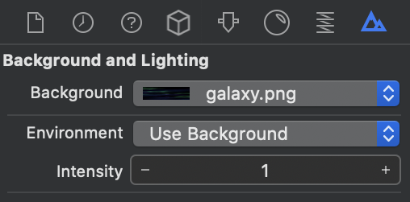
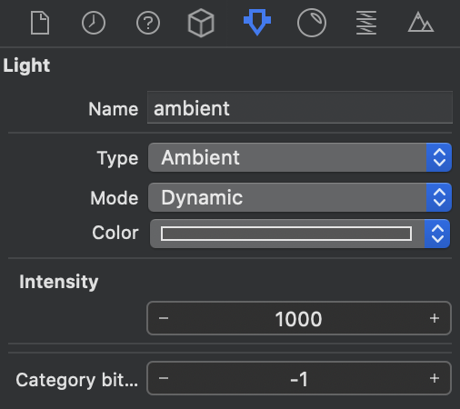
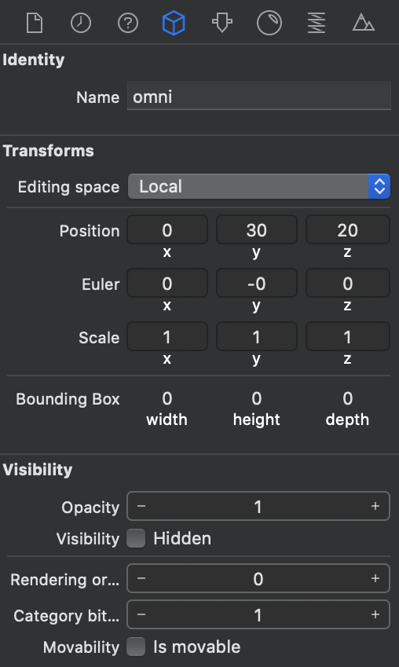
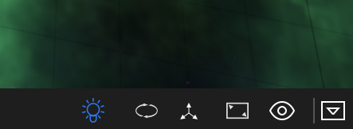
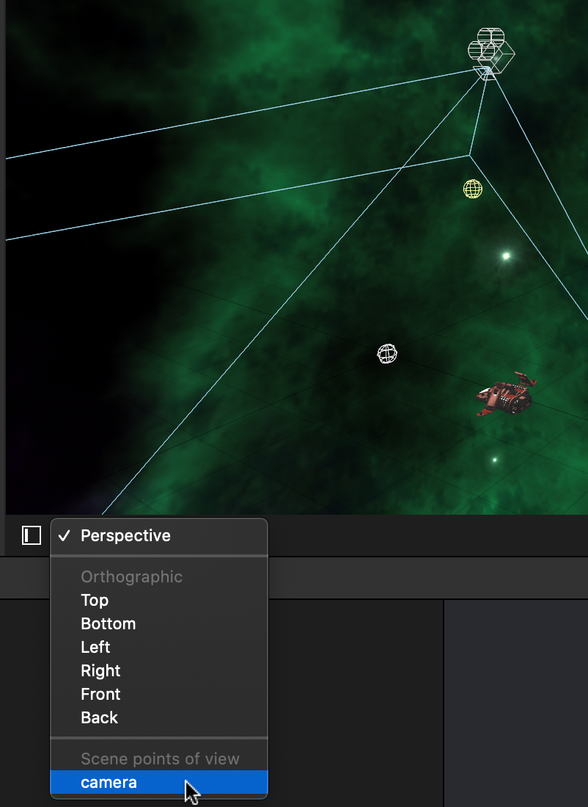

Escena
Contamos en el proyecto con una escena de nombre ship.scn en la que vemos el modelo de nuestra nave situdada en el origen de coordenadas (0, 0, 0). Vamos a añadir una serie de elementos a dicha escena.
Skybox¶
El skybox es un cubo con 6 caras mirando hacia su interior que hará el papel del "cielo", permitiéndonos girar en cualquier dirección. Todos los elementos de la escena 3D estarán siempre contenidos dentro de dicho cubo, que veremos como si fuera de tamaño "infinito" (como si fuera el cielo). Vamos a utilizar la imagen galaxy.png como skybox de nuestra escena.
TODO
A01: Añadir un skybox a la escena
- En el panel de la escena de
ship.scn, en la propiedad Background and Lighting > Background, seleccionaremosgalaxy.png, y veremos como esta imagen pasa a ser utilizada como skybox de la escena. Puedes probar a girar la escena para ver el efecto del nuevo cielo que acabamos de añadir. Las propiedades generales de la escena podremos editarlas en el Inspector de la Escena.
Luces¶
Deberemos añadir fuentes de luz para iluminar los elementos de la escena. Encontramos diferentes tipos de luces, según si queremos iluminar todos los objetos por igual (luz ambiente) o emitir luz desde diferentes puntos o en diferentes direcciones. Siempre será conveniente contar con algo de luz ambiente para garantizar una iluminación mínima, que simularía la luz general que se produce cuando la luz se refleja en todas las superficies. Vamos a continuación a configurar las luces que utilizaremos en la escena.
TODO
A02: Añadir dos luces a la escena:
- Una luz ambiente, que ilumine todas las caras por igual, con un color gris oscuro e intensidad 1000. Las propiedades de cada componente de los nodos (como lo es la luz) podrán ser editadas en el Inspector de Atributos.

- Una luz omni, que desde la posicion (0, 30, 20) ilumine en todas las direcciones por igual, de color blanco y con intensidad 2500. Para editar la posición de la luz deberemos utilizar el Inspector de Nodo (la posición es una propiedad común de los nodos), mientras que para cambiar las propiedades específicas de la luz utilizaremos el Inspector de Atributos.

Comprueba los efectos de la luz en los elementos de la escena. Se recomienda desactivar la opción Default Lighting del editor (panel inferior-derecha del editor) para así previsualizar los efectos reales de las luces que hemos añadido. De no hacerlo, los objetos en el editor aparecerán siempre con un iluminación por defecto, aunque no hubiese puntos de luz, para así permitirnos ver el contenido de la escena. En el juego esa iluminación por defecto no se aplicará.

Cámara¶
Necesitaremos añadir una cámara para renderizar la escena desde su punto de vista.
TODO
A03: Vamos a añadir una cámara a la escena con las siguientes propiedades:
- El nombre del nodo será camera.
- La posicionaremos en (0, 50, 20)
- La inclinaremos -45 grados en el eje X para que mire hacia la nave, quedando la nave en la parte inferior de la pantalla.
- Modificaremos el plano lejano de la cámara (Z Clipping > Far) y le daremos valor
200, para que así se muestren objetos que están más alejados. Lo necesitaremos posteriormente para que las balas y los asteriodes que se encuentran más lejos se sigan viendo. Todo lo que esté a más de200unidades de la cámara no se renderizará.
Puedes visualizar la escena desde el punto de vista de la cámara, para así tener una vista previa de lo que veríamos en pantalla. Para ello seleccionamos la cámara desde el cuadro que encontramos en la parte inferior-izquierda de la escena:

En el inspector de atributos del componente cámara, podemos ver algunas propiedades específicas de este componente como por ejemplo Motion Blur Intensity. Por ejemplo, podríamos darle un valor de 0.8 para tener un efecto de motion blur en la escena (prueba a cambiar este valor posteriormente para ver su efecto en el juego).